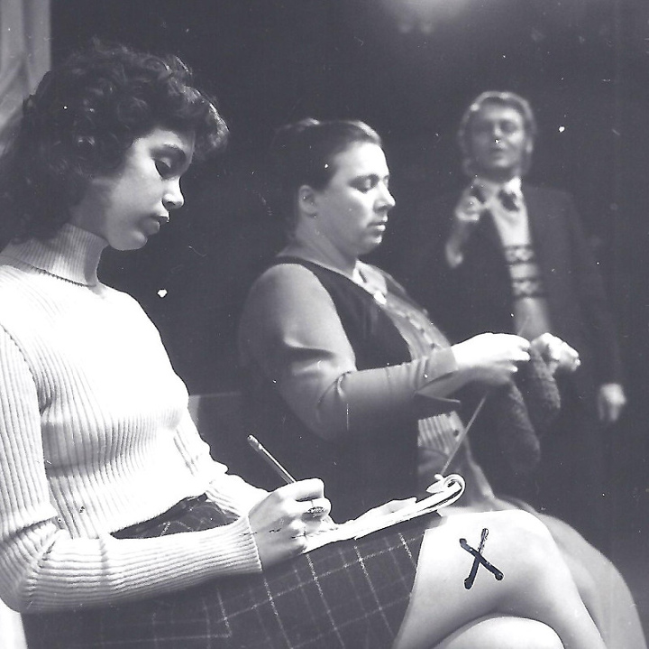
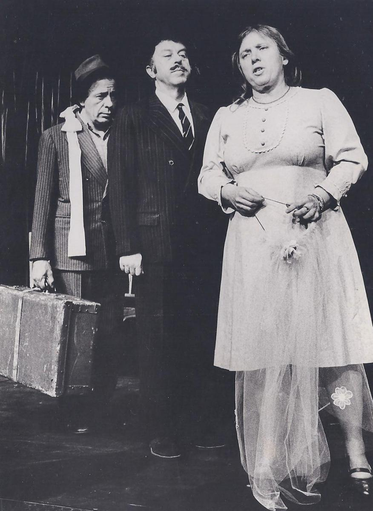
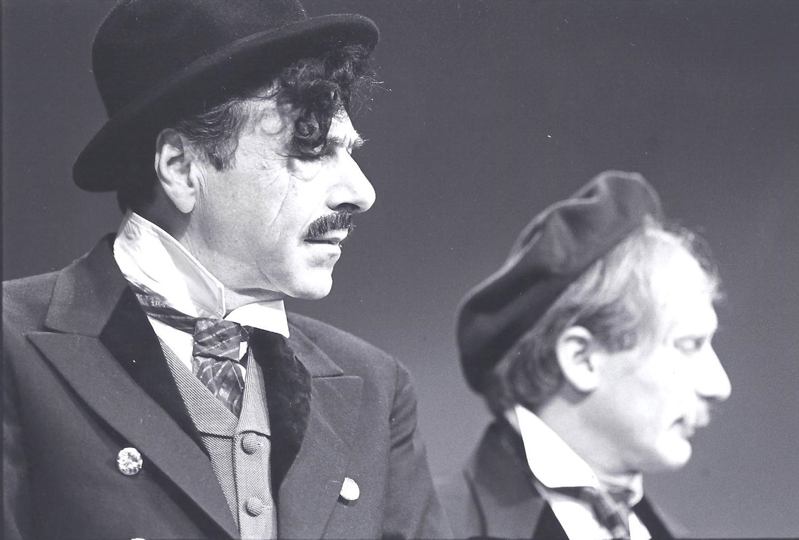
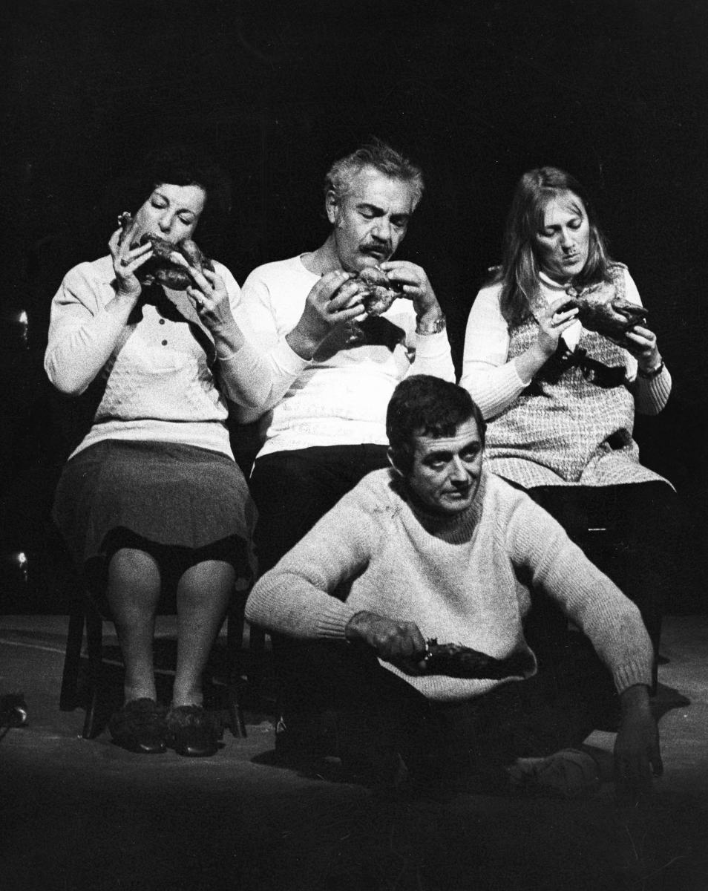

חנוך לוין הוא בלי ספק גדול מחזאי ישראל, ואחד היוצרים החשובים והמגוּונים ביותר בתרבות העברית עד היום. יצירתו כוללת מגוון רחב מאוד של ז'אנרים ספרותיים – מחזות קומיים וטראגיים, קבּרטים סאטיריים, סיפורים וקטעי פרוזה, שירים ופזמונים, מערכונים, תסכיתי רדיו ותסריטים. בתוך כל המכלול הנרחב הזה יצר לוין עולם משלו, בעל מאפיינים שאי־אפשר לטעות בהם, ושפת כתיבה שאין דומה לה בעברית המודרנית.






